2026 · ROBOTICS S/W ENGINEERING
김민수 PORTFOLIO
로봇 S/W · 자율주행(ROS 2) 엔지니어
김민수 (Kim Minsu) · 1999.05.19
ajferhcz153@gmail.com · 010-9900-9256 · github.com/kimminsu0519 · kimminsu0519.github.io/pf
1
PROFILE & STACK
엔지니어 프로필 · 학력/경력/수상 · 핵심 기술 스택
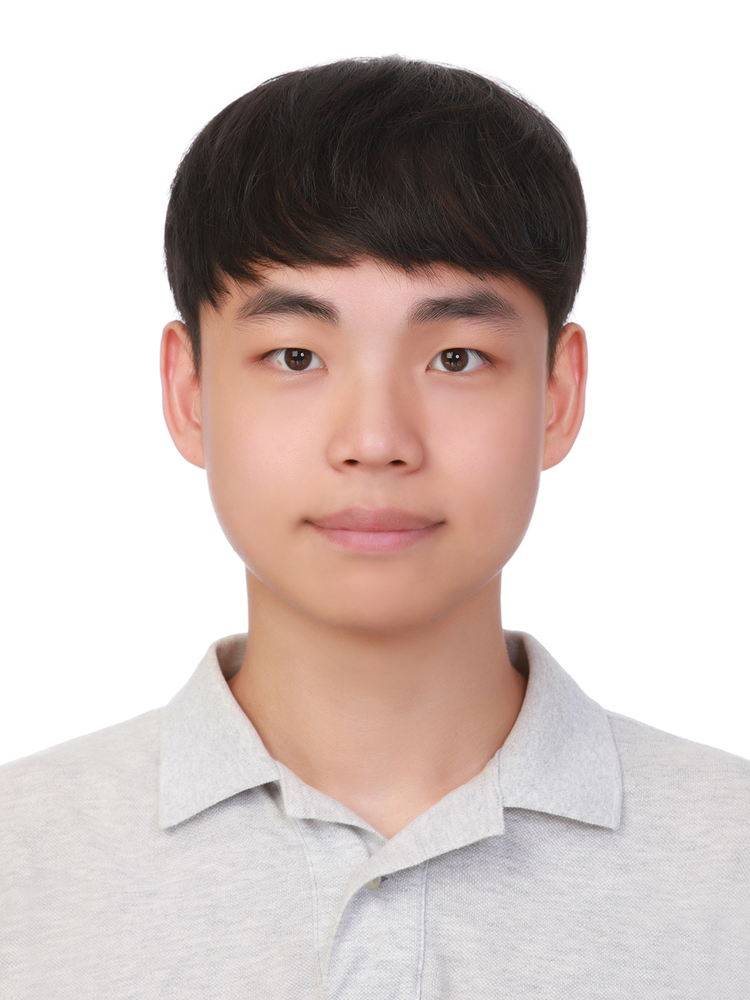
김민수
로봇 S/W · 자율주행(ROS 2) 엔지니어
EDUCATION & TRAINING
- 인천대학교 정보통신공학과 (2018.03 ~ 2025.02)
공학사 졸업 · 전체 평점 3.82/4.5 (전공 3.83/4.5) - 에드인에듀 아카데미 (2025.02 ~ 2025.08 · 960시간)
ROS 2 · AI 자율주행 로봇 개발자 양성과정 수료
CAREER
- (주)넥스트디앤에이 AMR 제어팀 인턴 (2021.12 ~ 2022.09 · 10개월)
미국 SK배터리(39대)·현대모비스(40대)·한화큐셀 양산 라인 셋업
CERTIFICATIONS & AWARDS
- 정보처리기사 (2026.09.11) · OPIc IM1 · 운전면허 2종 보통
- 2025 WCRC AI 주행로봇(대학일반) — 은상 (2위) (2025.08 · 팀장 PM/시스템 아키텍처)
- 스마트해상물류 × ICT멘토링 공모전 — 동상 (2024.12 · AutoSavior)
Core Technical Stack & Field/Sim Verification
Robotics & Navigation
ROS 2 (Jazzy / Humble)
Nav2 · EKF · AMCL
Cartographer · slam_toolbox
A* Topology Path
Gazebo Harmonic · RViz2
- Gazebo 휠 슬립 환경 6축 자이로 EKF(
yaw=false) 및 AMCL 원점 정합 - 206노드 토폴로지 A* 순차 디스패처 · 50Hz PID 정밀 도킹 구현
검증: LSM Bot C++17(39~108x) · 50Hz PID(1.9~3.4cm) · EKF(+91.6%)
Languages & Industrial Control
Python 3
C++17 (rclcpp · Eigen3)
SICK LiDAR-LOC · SOPAS ET
Safety Designer (nanoScan3)
PLC/PIO · ACS · OpenCR
- 50m 반복 구간 스캔 오매칭 규명 및 비대칭 반사판 배치·도킹 1mm 티칭
Safety Designer구역 분할 및 Input Delay 20ms로 세이프티 오정지 해소
검증: SK·현대모비스 양산 79대 셋업 · 이탈 재발 0건 · 20ms 지연 보정
AI Vision & Edge Deployment
YOLOv8n
MediaPipe (21-Keypoint)
OpenAI API · Porcupine
Hailo-8 NPU (ONNX 양자화)
Raspberry Pi 5
- 화염 1,600장 증강 YOLOv8n 학습 및
Hailo-8 NPU온보드 양자화 배포 - MediaPipe 5-Frame 합의·0.3s 선형 감속 및 WakeWord·LLM 9종 의도 제어
검증: AutoSavior mAP@50 0.926 · LIBO 5-Frame · 15s→1.5s 지연 단축
Infra, Comm & Database
Ubuntu (22.04 / 24.04) · Docker
WebSocket (Port 9090)
UDP (4MB) · Mutex Lock
MySQL 8.0 · GCP
- 분산 ROS 2 커스텀 규격(
lsm/libo_interfaces) 및ament_index이식성 구축 - UDP 4MB 수신·추론 스레드 분리(30fps) 및 Port 9090 WebSocket FMS 연동
검증: Custom ROS 2 인터페이스(lsm/libo) · Web FMS & Cloud DB 구축
2
PORTFOLIO CONTENTS
자율주행 · 필드 엔지니어링 · AI 로보틱스 핵심 경험 로드맵
PROJECT 01 · SIMULATION & FMS
04 ~ 07p
LSM Bot (2026.07 ~ 2026.09 · 1인)
스마트 물류 센터 자율주행 AMR 및 FMS 통합 관제 시스템
양산 현장 슬립·좌표 문제를 Gazebo 1:1 월드로 재현하고, 무노이즈 GT 스냅을 차단한 6축 EKF(+91.6%)와 50Hz PID 도킹(1.9~3.4cm)·206노드 A*로 28.14m 슬립·정상 E2E 완주
6축 자이로 EKF (XY +91.6%)
206노드 A* 순차 디스패치
C++17 50Hz PID 도킹(1.9~3.4cm)
PROJECT 02 · HRI & AI ROBOT
08 ~ 10p
LIBO (2025.07 ~ 2025.08 · 5인 / AI·통신 전담)
ROS 2와 인공지능을 활용한 자율주행 서점 도우미 로봇
MediaPipe 5-Frame 합의·20단계 선형 감속으로 급정거를 차단하고, Porcupine 한국어 WakeWord·RMS 침묵 감지·GPT-3.5 9종 의도 분류로 모드 오케스트레이션 구축
5-Frame + 0.3s 선형 감속
Porcupine · RMS 1.5s · GPT-3.5
libo_interfaces (13 .msg / 21 .srv)
WORK EXPERIENCE · FIELD ENGINEERING
11 ~ 12p
AMR 제어팀 (인턴) (2021.12 ~ 2022.09 · 10개월)
생산라인 자율주행 물류(AMR/AGV) 시스템 셋업 및 센서·PLC 유지보수
미국 SK배터리(39대)·현대모비스 대구(40대)·한화큐셀 양산 라인 셋업 및 LiDAR-LOC 비대칭 반사판 배치·nanoScan3 세이프티·PIO 디버깅 수행
양산 플릿 79대 셋업
50m 구간 이탈 재발 0건
0.05°/1mm 도킹 · 20ms 지연 보정
PROJECT 03 · THESIS & HANIUM
13 ~ 14p
AutoSavior (2024.04 ~ 2024.11 · 3인 / 총괄·AI 전담)
IoT 화재 감지 연계 자율주행 화재 진압 로봇
Roboflow 2배 증강(1,600장)·YOLOv8n 학습(mAP@50 0.926) 및 Raspberry Pi 5 + Hailo-8 NPU 온보드 양자화·컴파일 파이프라인 구축
mAP@50 0.926 · Recall 0.927
Hailo-8 엣지 NPU 양자화
학사학위논문 · 한이음 동상
구성 안내 : 01 표지 · 02 프로필 · 스택 · 03 목차 · 04 ~ 14 핵심 경험 4선 · 15 Closing
대외 수상 요약 : 2025 WCRC 대학일반 은상(2위) · 2024 한이음 드림업 동상
3
PROJECT 01 · LSM Bot
스마트 물류 센터 자율주행 AMR 및 FMS 통합 관제 시스템 (1/4 · 개요 및 아키텍처)
개발 기간
2026.07 ~ 2026.09 (이후 EKF Ablation · 5단계 FSM E2E 고도화)
참여 인력
1인 단독 프로젝트 (C++17 제어·FSM·A* · EKF · Gazebo · FMS 풀스택)
기술 스택
ROS 2 Jazzy, C++17 (rclcpp · Eigen3), Python 3.12, Gazebo Harmonic 8.11, Nav2 (AMCL, EKF), WebSocket
프로젝트 개요 및 핵심 구현
- 현장 기반 시뮬레이터 구축: 양산 창고 동선을 1:1 Gazebo 3D 월드로 제작하고 마찰 분리(
slip_mode) 슬립 벤치마크 구현 - 6축 자이로 EKF & AMCL 원점 정합: GT 스냅 차단(
yaw=false) 4-Way 검증으로 XY +91.6% · Yaw +86.4% 개선 및 AMCL 원점 정렬(0.09cm) - 206노드 A* 순차 디스패처: 10Hz
SequentialNavigator와cancel_active_route로 통로 이탈·경합 원천 방지 - 5단계 FSM · 슬립 E2E 풀 사이클: 50Hz PID 도킹·Port 9090 관제 연동으로 28.14m 완주(슬립 210.47초 · 정상 216.17초)
EKF 4-Way 오차 개선
XY +91.6%
0.3825→0.0322m · Yaw +86.4%
토폴로지 · 관제
206노드 A*
5단계 FSM (10.000 Hz)
슬립/정상 E2E 실증
210.47초
28.14m · 슬립 도킹 1.90cm
통합 시스템 아키텍처 (Gazebo · ROS 2 Jazzy · FMS Web)
Gazebo · RViz2 · Web FMS 실구동 화면
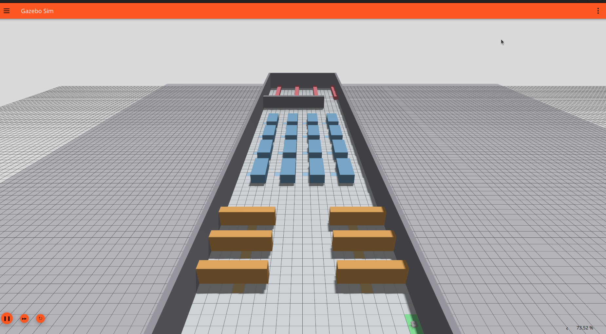
▲ 1:1 스케일 Gazebo 3D 창고 월드
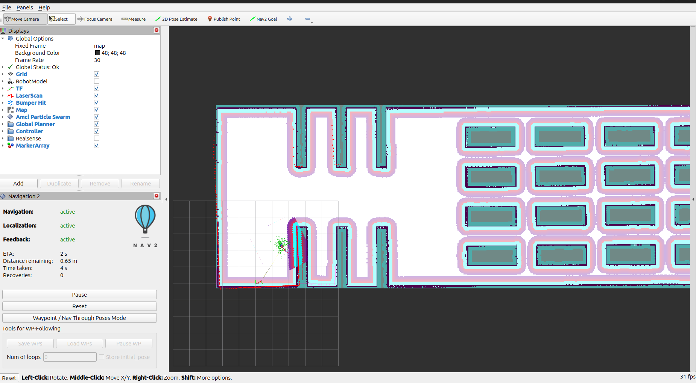
▲ RViz2 AMCL 파티클 수렴 · Nav2 주행
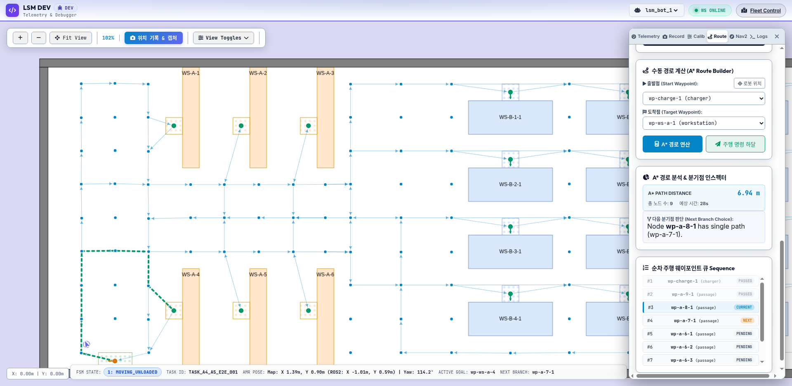
▲ WebSocket FMS (206노드 A* · 5단계 FSM)
Verification Gate PASS · C++17 (-O3) 8 Packages (0 Errors)
/odometry/filtered 30.01Hz · Zero Hardcoded Paths (ament_index)
4
PROJECT 01 · LSM Bot
Problem Solving 1-1 · AMCL 원점 정합 & 6축 자이로 EKF 4-Way (2/4)
1-1. 무노이즈 GT 스냅을 배제한 6축 MEMS 자이로 EKF 4-Way 검증으로 슬립 오차 XY +91.6%(0.0322m) · Yaw +86.4% 개선
단독 TF 발행 아키텍처 & EKF 4-Way Ablation 실측표 (352 samples / 18.66s)
▲ robot_state_publisher (static) + EKF(30.25Hz) + AMCL(10.37Hz)
4-Way 센서 융합 행렬 (
•
• 핵심 검증:
ax=T vs ax=F · yaw=false)•
odom0: vx = true (슬립 vy, vyaw = false) / imu0: vyaw = true, ax = true/false• 핵심 검증:
v2 전진 궤적으로 역주행 상쇄 배제 · ax 차이 0.6mm 확인(회전 슬립 주원인)
| 평가 지표 (v2 vs GT) | Case A Raw /odom |
B1 (Main) ax=T, yaw=F |
B2 (Ref) ax=F, yaw=F |
C (Ref) AHRS yaw=T |
개선율 (A→B1) |
|---|---|---|---|---|---|
| XY 궤적 RMSE | 0.3825 m | 0.0322 m | 0.0316 m | 0.0292 m | +91.6% |
| XY 최대 오차 | 0.7358 m | 0.0541 m | 0.0539 m | 0.0539 m | +92.6% |
| XY 최종 오차 | 0.7311 m | 0.0230 m | 0.0226 m | 0.0096 m | +96.9% |
| Yaw 방위각 RMSE | 12.614° | 1.710° | 1.749° | 1.375° | +86.4% |
| Yaw 최대 / 최종 | 25.18° / 15.45° | 4.72° / 0.80° | 4.62° / 0.80° | 4.26° / 0.00° | +94.8%(종료) |
전진 연속 궤적 휠 슬립 벤치마크 4-Way Ablation 실측 그래프 (v2)
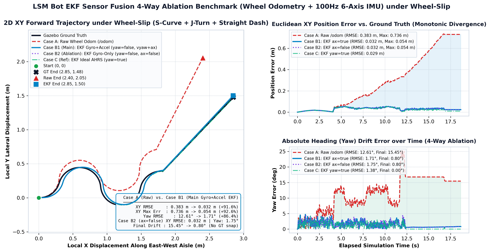
1. 문제 원인
- AMCL 이중 오프셋 불일치:
map_origin=[-2.4,-0.3]에서 초기 포즈를(2.4,0.3)으로 이중 발행하는 설정·대칭 맵 역수렴 존재 - 슬립 시 단조 발산: 전진 궤적(v2) S-커브+J-Turn 중 휠 슬립으로 Raw
/odom이 XY 0.7358m · Yaw 25.182°까지 이탈 - 시뮬레이터 GT 스냅 함정: Gazebo
gz-sim-imu-system의 orientation 쿼터니언이 무노이즈 GT와 직결되어yaw=true시 인위적 0.000° 수렴 발생
2. 해결 과정 (핵심 실행)
- AMCL 원점·도메인 정합: 초기 포즈를
map=(0,0,180°)로 정렬해AMCL_vs_GT 0.09cm확보 및 도메인 통일 - 6축 자이로 EKF 설계:
yaw=false로 GT 스냅 차단, 노이즈·바이어스 자이로(vyaw, ax) + 휠 선속도(vx) 융합 - 4-Way Ablation & Q 튜닝:
ax=T(B1)vsax=F(B2)동시 계측 및Q(ax,ax)=0.001억제 튜닝
3. 결과 및 검증
- 4-Way 전진 궤적 실험에서 Raw 대비 XY RMSE +91.6%(0.3825→0.0322m) · Yaw +86.4%(1.710°) 개선 (
ax차이 0.6mm) - 종료 오차 96.9%(0.731→0.023m) 감소, 210s 장기 주행 자이로 드리프트(10.85°)도 AMCL 스캔 매칭으로 0.10° 수렴 검증
ekf_filter_node단독 TF 발행(30.25Hz) 및/odometry/filtered(30.01Hz) Nav2·FMS 통합 연동 완료
5
PROJECT 01 · LSM Bot
Problem Solving 1-2 · 206노드 A* 순차 디스패처 & 5단계 FSM E2E (3/4)
1-2. 206노드 A* 순차 디스패처와 C++17 5단계 FSM으로 28.14m 정상(216.17s)·슬립(210.47s) E2E 완주
5단계 물류 FSM 상태 전이 & lsm_interfaces ROS 2 / WebSocket 계약
| 구간 / 단계 | 출발 → 도착 | A* 웨이포인트 / 거리 | C++17 + 50Hz PID 실측 검증 (정상 / slip_mode:=true) |
|---|---|---|---|
| Leg 1 (공차) | wp-charge-1 → wp-ws-a-4 | 9 wps / 6.94 m | Nav2 29.2~29.3cm → PID 도킹 3.27cm(정상) / 3.01cm(슬립) · FSM 0→1→2 |
| Leg 2 (실차) | wp-ws-a-4 → wp-ws-a-5 | 12 wps / 11.65 m | CARGO_LOADED(2) 트리거 · PID 도킹 1.63cm(정상) / 1.71cm(슬립) · 3→4 |
| Leg 3 (복귀) | wp-ws-a-5 → wp-charge-1 | 10 wps / 9.55 m | 정상 216.17s / 슬립 210.47s(Raw 대비 -6.29s) · AMCL Yaw 0.10° · [0,1,2,3,4,1,0] |
FMS 웹 UI 5단계 FSM 배지 & 206노드 A* 순차 경로
▲ TASK_A4_A5_E2E_001 실행 중 FMS 화면
(좌측 녹색 A* 최단 경로 + 하단 FSM 1: MOVING_UNLOADED 상태바)
(좌측 녹색 A* 최단 경로 + 하단 FSM 1: MOVING_UNLOADED 상태바)
1. 문제 원인
- 단일 직통 주행 시 통로 이탈: Nav2에 최종 목적지만 직접 전송하면 좁은 랙·작업대 사이를 가로지르며 코너 충돌 위험 발생
- 단순 주행 완료 vs 공정 상태 분리 부족: 적재·하역 작업 대기와 공차·실차 주행을 구분하는 표준 물류 상태 머신 부재
- 경로 취소 및 이식성 한계: 하드코딩된 절대 경로와 미션 취소 시 잔여 웨이포인트가 남는 경합 위험 존재
2. 해결 과정 (핵심 실행)
- 206노드 A* + SequentialNavigator: 156 활성 노드·208 방향 엣지 그래프 위 A* 경로를 계산해 10Hz로 순차 Nav2 Goal 디스패치
- 독립 FSM 노드 & 계약:
amr_state_machine_node로 5단계 상태를 10Hz 발행하고,DispatchTask액션·TriggerMockEvent서비스 분리 - 취소 안전성 & WebSocket 연동:
cancel_active_route()로 취소 시 큐 즉시 비움 구현 및 Port 9090 FMS UI 스텝퍼 연동
3. 결과 및 검증
- E2E 풀 사이클 100% 정합: 3-Leg(31 wps, 28.14m) 미션에서 관측 시퀀스
[0,1,2,3,4,1,0]일치 및STATUS_SUCCEEDED달성 - 비대칭 슬립(
mu=0.35/0.28) E2E에서도 Raw+AMCL(216.76s) 대비 210.47s(-6.29s) 완주 및 도킹 1.90cm(-93.5%) 달성 colcon build8개 패키지 에러 0건,ament_index_python기반 경로 이식성 검증 완료
6
PROJECT 01 · LSM Bot
Problem Solving 1-3 · C++17 (rclcpp · Eigen3) 코어 전환 & 50Hz PID 정밀 도킹 (4/4)
1-3. C++17(rclcpp · Eigen3) 실시간 코어 전환으로 연산 39~108배 가속 및 50Hz PID 정밀 도킹(29.27cm → 3.42cm) 달성
C++17 하이브리드 아키텍처 & Python 3.12 대비 6종 정량 벤치마크 실측표
| 벤치마크 평가 항목 (동일 워크스테이션) | Python 3.12 (rclpy/NumPy) | C++17 -O3 (rclcpp/Eigen3) | 성능 향상 배율 / 개선율 |
|---|---|---|---|
| 206노드 토폴로지 A* 탐색 (1,000회) | 57.57 µs (P99 85.84 µs) | 1.47 µs (P99 3.05 µs) | 39.09x 가속 (-97.4%) |
| 2D EKF Predict+Update Step (10,000회) | 32.08 µs (P99 42.04 µs) | 0.295 µs (P99 0.371 µs) | 108.74x 가속 (-99.1%) |
| 360° LiDAR 안전 영역 판별 (10,000회) | 61.65 µs (P99 70.56 µs) | 0.866 µs (P99 0.902 µs) | 71.19x 가속 (-98.6%) |
| 50Hz 타이머 주기 지터 / 노드 RSS 메모리 | 63.59 µs / 97.09 MB | 12.11 µs / 27.63 MB | 지터 5.25x · 메모리 3.51x ↓ |
| 작업장·충전소 최종 도킹 위치 오차 (E2E) | 29.27 cm (Nav2 공차 한계) | 정상 3.42cm · 슬립 1.90cm | -88.3% / 슬립 -93.5% |
C++17 vs Python 3.12 4-패널 정량 벤치마크 실측 (300 DPI)
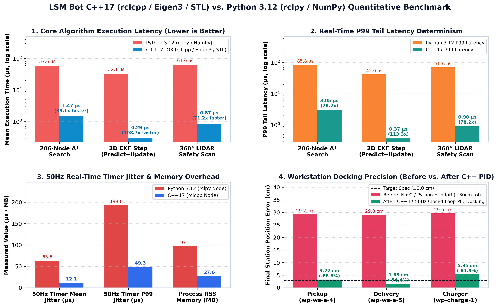
1. 문제 원인
- Python GIL · GC 지연: 50Hz 폐루프·LiDAR 감시 시 Python P99 지터(
193µs)·메모리(97.1MB) 부담 - 해싱 · NumPy 래퍼 오버헤드: 소형 6×6 EKF·206노드 그래프에서 C-API·힙 박싱 비용이 연산 대부분 차지
- Nav2 정차 오차(~29cm): 복도 주행용 허용 공차(
0.25~0.30m)만으로는 작업장 정밀 정차 불가
2. 해결 과정 (핵심 실행)
- Zero-Allocation C++17 코어: 정수 인덱스 연속 벡터 A* 및
Eigen36×6 스택 고정 EKF 커널 구현 - 50Hz 2단계 PID 정밀 도킹: 병진 PID + 제자리 각도 정렬 및 전·후방 360°
/scan0.14m 비상 정지 - 멀티스레드 FSM 하이브리드: 4스레드
MultiThreadedExecutorC++ FSM과 Python WebSocket 브릿지 분리
3. 결과 및 검증
- 동일 환경 벤치마크에서 A* 39.1배(1.47µs) · 2D EKF 108.7배(0.29µs) · 360° LiDAR 감시 71.2배(0.87µs) 가속 달성
- 50Hz 지터 5.25배(12.11µs)·메모리 71.5% 절감, 도킹 오차 정상 3.42cm(-88.3%) · 슬립 1.90cm(-93.5%) 개선
- C++17 3종 통합 E2E 완주: 정상 216.17s(정착 0.72~1.43cm) · 슬립 210.47s(AMCL Yaw 0.10°)
7
PROJECT 02 · LIBO
ROS 2와 인공지능을 활용한 자율주행 서점 도우미 로봇 (1/3 · 개요 및 시스템 아키텍처)
개발 기간
2025.07.09 ~ 2025.08.14
참여 인력
5인 팀 (AI HRI · 비전 제스처 · 음성/LLM · 통신 규격/GCP DB 전담 — 본인)
기술 스택
ROS 2 Humble, Python 3.10, OpenCV, MediaPipe, Porcupine, OpenAI GPT-3.5, Google STT/TTS, MySQL 8.0
프로젝트 개요 및 본인 핵심 기여
- 서점 서비스 자율주행 로봇: 대형 서점 내 고객 도서 검색·안내 및 직원의 도서 운반을 보조하는 HRI 로봇 시스템
- 비전 제스처 안전 제어: MediaPipe 5-Frame 합의·기하 임계값 및 20단계 선형 감속으로 오작동·급정거 차단
- WakeWord · LLM 오케스트레이션: Porcupine(
'리보야') + RMS 1.5s 침묵 감지 + GPT-3.5 9종 의도 분류로 모드 전환 - 분산 통신 · 클라우드 DB:
libo_interfaces(13.msg/21.srv) 확립, UDP 4MB/Lock 튜닝 및 GCP MySQL 8.0 연동
비전·제스처 안정화
5-Frame · 0.3s
4MB UDP · 20단계 선형 감속
음성 대기 지연 개선
15s → 1.5s
RMS 300 컷 · GPT-3.5 9종
ROS 2 인터페이스 규격
13 .msg / 21 .srv
GCP MySQL 8.0 · DDS 통합
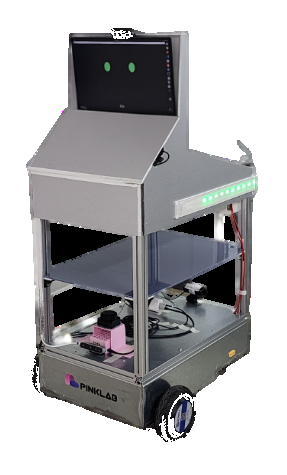
▲ 제작 완료된 LIBO 실물 (분산 ROS 2 노드 구성)
분산 시스템 아키텍처 (Robot H/W · AI Service Server · Main ROS 2 Server · GCP DB)
8
PROJECT 02 · LIBO
Problem Solving 2-1 · 비전 제스처 실시간 파이프라인 & 장애물 우선 안전 감속 (2/3)
2-1. MediaPipe 5-Frame 합의 · UDP 4MB 버퍼 분리 · 20단계 선형 감속으로 오작동 및 급정거 차단
HandGestureDetector · GestureControlNode 실시간 안전 제어 아키텍처
검증 완료된 기하 임계값 및 안전 제어 파라미터 (hand_gesture_detector.py · gesture_control_node.py)
| 제스처 / 안전 상태 | 기하 판별 조건 · ROS 2 인터락 로직 | 제어 출력 · 안전 처리 |
|---|---|---|
| LEFT / RIGHT (회전) | 주먹(ext==0) + thumb_idx>0.08, angle>30°, palm_x ±0.1 |
±0.3 rad/s (방향 반전 시 선감속) |
| GO / BACK (전·후진) | 손가락 2+ 펴짐(tip.y < pip.y-0.03), wrist.y+0.02 상/하 |
+0.2 / -0.1 m/s (평균 Y 병행 검증) |
| STOP · 장애물 탈출 | thumb_in_center 주먹 · 전방 장애물→BACK만 / 후방→GO만 |
gradual_stop(steps=20, 0.3s) |
실시간 기하 임계값 & 슬라이딩 필터 디버깅
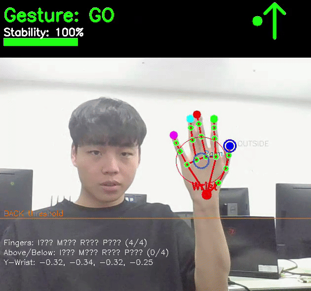
▲ GO 제스처 (Stability 100% / Y-Wrist 음수 구간)
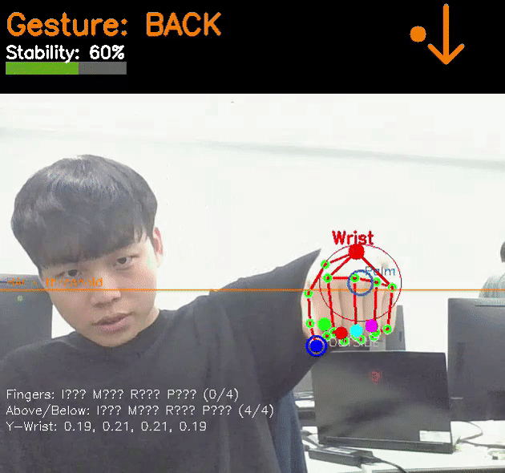
▲ BACK 임계값 통과 (5-Frame 필터 / min_count=3)
1. 문제 원인
- 단일 프레임 기준 21개 관절 좌표 판정 시 조명 변화·손떨림으로 프레임 간 명령 떨림(Chattering) 빈번 발생
STOP/none전이 또는 회전 반전 시 즉시cmd_vel=0을 인가해 도서 적재 로봇 급정거 및 차체 흔들림 유발- UDP RAW 영상 수신 버퍼(기본값 1MB)와 단일 스레드 처리 병목으로 고해상도 프레임 드랍 및 지연 발생
2. 해결 과정 (핵심 실행)
- UDP 4MB & Mutex 스레드 분리:
SO_RCVBUF(4MB)확장 및receive_frames()–frame_lock분리로 30fps 추론 보장 - 기하 임계값 + 5-Frame 필터:
thumb_angle>30°/palm_center_x±0.1기하 판정과history=5 · min_count=3연속 합의 적용 - 20단계 감속 & 탈출 우선순위:
gradual_stop(steps=20, 0.3s)와 전·후·양측DetectionStatus별 탈출 방향만 허용하는 인터락 구현
3. 결과 및 검증
- Stability 100% 실시간 디버그 HUD 검증 및 일시적 관절 떨림에 의한 오발행(GO↔STOP) 원천 차단
- 회전 반전(Left↔Right) 및 장애물 정지 시 0.3초 선형 감속으로 도서 적재 주행 안정성 확보
ActivateGesture / DeactivateGesture및TalkCommand("stop/activate")연동 완료
9
PROJECT 02 · LIBO
Problem Solving 2-2 · 실시간 음성·LLM 의도 분류 및 ROS 2 모드 오케스트레이션 (3/3)
2-2. Porcupine 한국어 WakeWord · RMS 1.5초 침묵 감지 · GPT-3.5 9종 의도 분류 기반 비동기 모드 전환
talker_manager2 실시간 음성 수집 · WakeWord · LLM ROS 2 오케스트레이션 구조
OpenAI gpt-3.5-turbo JSON 9종 의도 → ROS 2 액션·서비스 매핑 (talker_manager2.py)
| LLM Intent (JSON) | 대표 사용자 발화 예시 | ROS 2 서비스 · 토픽 실행 시퀀스 |
|---|---|---|
start_gesture / start_follow |
"제스쳐모드 시작" · "팔로우 시작" | ActivateGesture ↔ ActivateTracker + talk_cmd("activate") |
pause / resume_assist |
"잠깐 멈춰" · "다시 따라와" | /talk_command ("stop" / "activate") 주행 정지·재개 |
get_weight / stop_assist |
"책 무게는?" · "복귀하자" | /weight_data 동적 무게 TTS 응답 · EndTask.srv 호출 |
get_mode / weather / ignore |
"지금 모드?" · "날씨?" · 오호출 | 모드 상태 · dynamic_tts 응답 + 5s 후 normal 복귀 |
실환경 HRI 음성 명령 & 모드 전환 실증
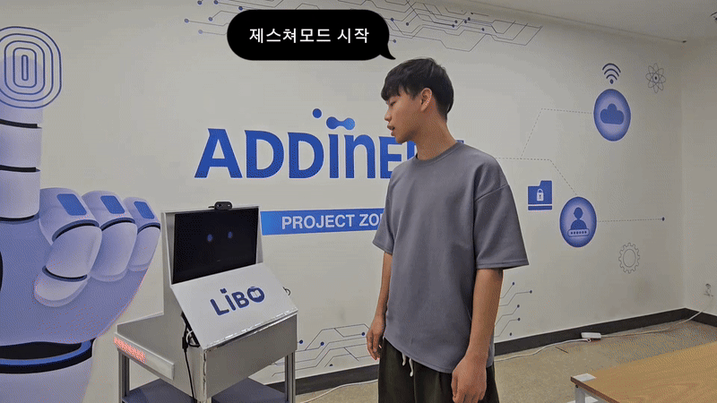
▲ 1) WakeWord('리보야') 감지 후 자연어 발화
("제스쳐모드 시작" → Listening)
("제스쳐모드 시작" → Listening)
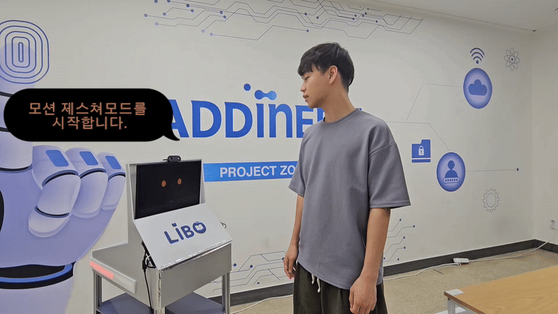
▲ 2) GPT 의도 분류 & ActivateGesture 전환
("모션 제스쳐모드를 시작합니다")
("모션 제스쳐모드를 시작합니다")
1. 문제 원인
- 고정 타임아웃(
max_time=15.0s) 녹음 시 짧은 명령("잠깐 멈춰")에도 불필요한 최대 대기 지연 발생 - 호출어('리보야') 발화 직후 로봇이 계속 이동하면 사용자와의 거리 이탈 및 후속 음성 수음 실패 유발
- 자유 발화 텍스트와 ROS 2 서비스 간 엄격한 구조가 없으면 모드 전환 충돌(Follow↔Gesture 동시 활성) 위험
2. 해결 과정 (핵심 실행)
- WakeWord 즉시 안전 정지:
Porcupine('리보야', sens=0.7)감지 순간/talk_command("stop")과listening표정 즉시 발행 - PCM RMS 1.5초 침묵 컷: 청크별 16-bit PCM RMS(임계
300) 측정 후 발화 종료1.5초경과 시 즉각 녹음 종료 - 9종 JSON + 상호 배제 전환: Google STT →
gpt-3.5-turboJSON 파싱 후 Tracker/Gesture 서비스를 상호 배제 호출 & 5s 데몬 표정 복귀
3. 결과 및 검증
- 최대 15초 대기 병목을 제거하고 발화 종료 1.5초 후 즉각 STT→GPT 파이프라인 트리거 달성
- ROS 2 Spin 데몬 스레드와 WakeWord/음성 처리 분리로 음성 응답 중에도 주행 제어·무게 구독 블로킹 차단
- 서점 현장 시연에서
WakeWord → 모드 전환(Gesture/Follow) → 무게 질의·복귀HRI 루프 완수
10
WORK EXPERIENCE · AMR 제어팀 (인턴)
생산라인 자율주행 물류(AMR/AGV) 시스템 셋업 및 센서·PLC 유지보수 (1/2 · 개요 및 현장 플릿)
근무 기간
2021.12 ~ 2022.09 (10개월)
파견 현장
미국 SK배터리(39대) · 현대모비스 대구(40대) · 한화큐셀 진천 생산라인
엔지니어링 툴
SICK LiDAR-LOC, SOPAS ET, Safety Designer, SIM1000 v2.1, GX Works3(PLC), ACS 관제
담당 직무
AMR/AGV 필드엔지니어 (SLAM 매핑 · 정밀 도킹 티칭 · 세이프티 · PIO/하드웨어 디버깅)
양산 라인 실무 업무 및 핵심 기여
- 총 79대 양산 플릿 셋업: 미국 SK배터리(39대)·현대모비스(40대) 신규 라인 SLAM 매핑, 티칭 및 FTP 배포
- 위치 이탈 재발 0건: 50m 대칭 반복 구간 스캔 모호성 원인을 규명하고 비대칭 반사판 배치로 해결
- 세이프티 분할 & 20ms 억제:
Safety Designer·SOPAS ET구역 분할 및 Input Delay 20ms로n1/n3 fault해소 - 1mm 도킹 · PLC/PIO 디버깅:
GLS·QR Offset(0.05°)보정, PLC 시퀀스·배선(N24/S109) 트러블슈팅
미국 SK배터리
39대 셋업
이탈 재발 0건 · FTP 배포
현대모비스 대구
40대 셋업
nanoScan3 분할 · 20ms
한화큐셀 진천
0.05° / 1mm
VD2 HMI · PIO · 배선 수리
양산 라인 AMR 플릿 셋업 · 실차 주행 · ACS 관제 실증
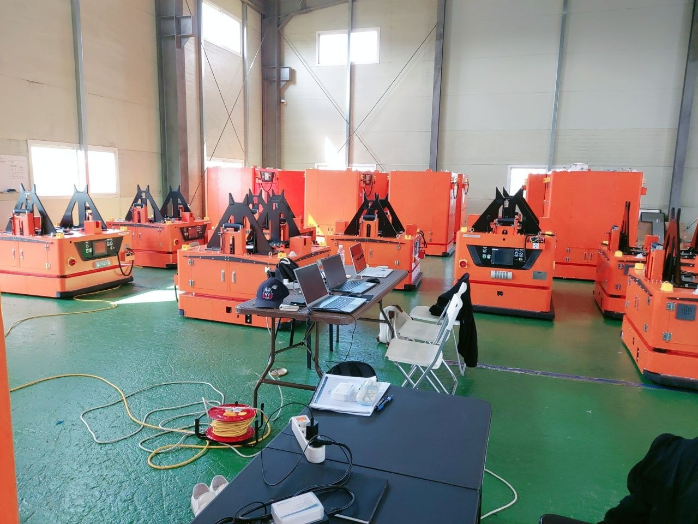
▲ 다수 AMR 동시 맵 · 파라미터 셋업
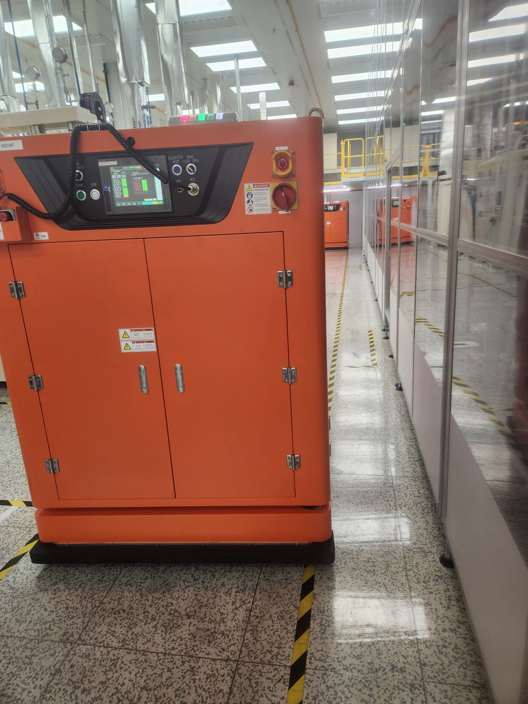
▲ 양산 라인 LiDAR AMR 실차 주행 검증
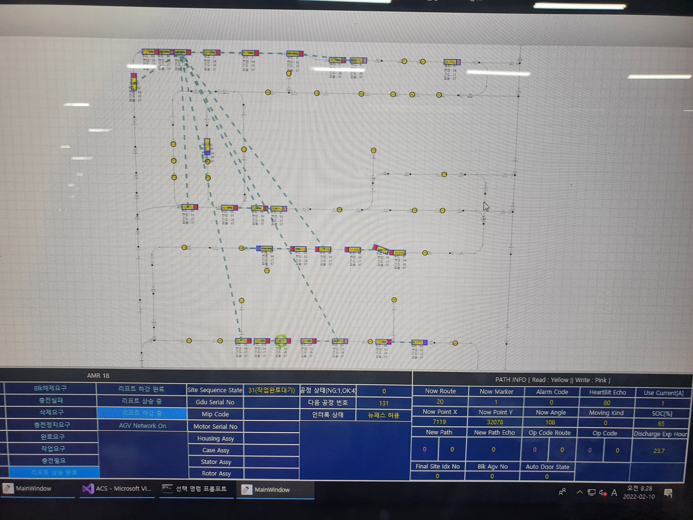
▲ ACS 통합 관제 토폴로지 맵 & 상태 모니터링
담당 핵심 산업용 센서 (SICK) & 실차 VD2 HMI 정밀 튜닝
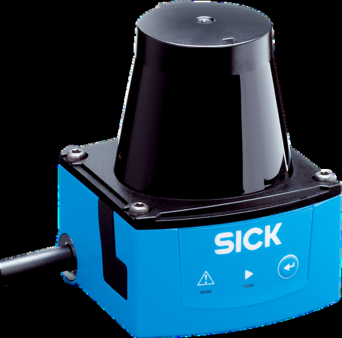
2D LiDAR Sensor
SICK TiM320
• 270° 고속 스캔 · 공장 2D SLAM 지도 작성
• LiDAR-LOC 맵 정합 및 반사판 기준점 트래킹
• LiDAR-LOC 맵 정합 및 반사판 기준점 트래킹
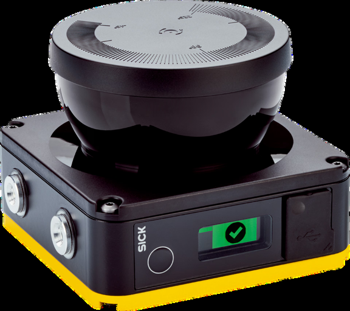
Safety Laser Scanner
SICK nanoScan3
• Safety Designer 직진/턴/소화전 필드 분할
• Input Delay 20ms 적용으로 n1/n3 fault 해소
• Input Delay 20ms 적용으로 n1/n3 fault 해소
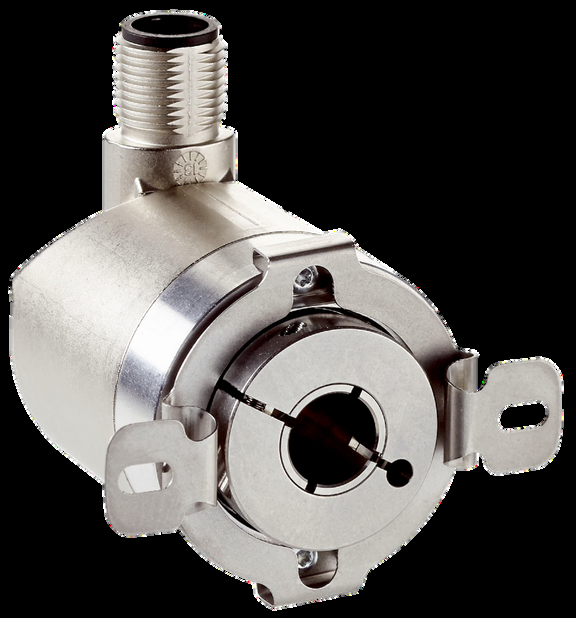
Absolute Encoder
SICK AHM36
• 조향·구동축 절대 각도 실시간 피드백
• 전원 재인가 원점 유지 및 오도메트리 정밀화
• 전원 재인가 원점 유지 및 오도메트리 정밀화
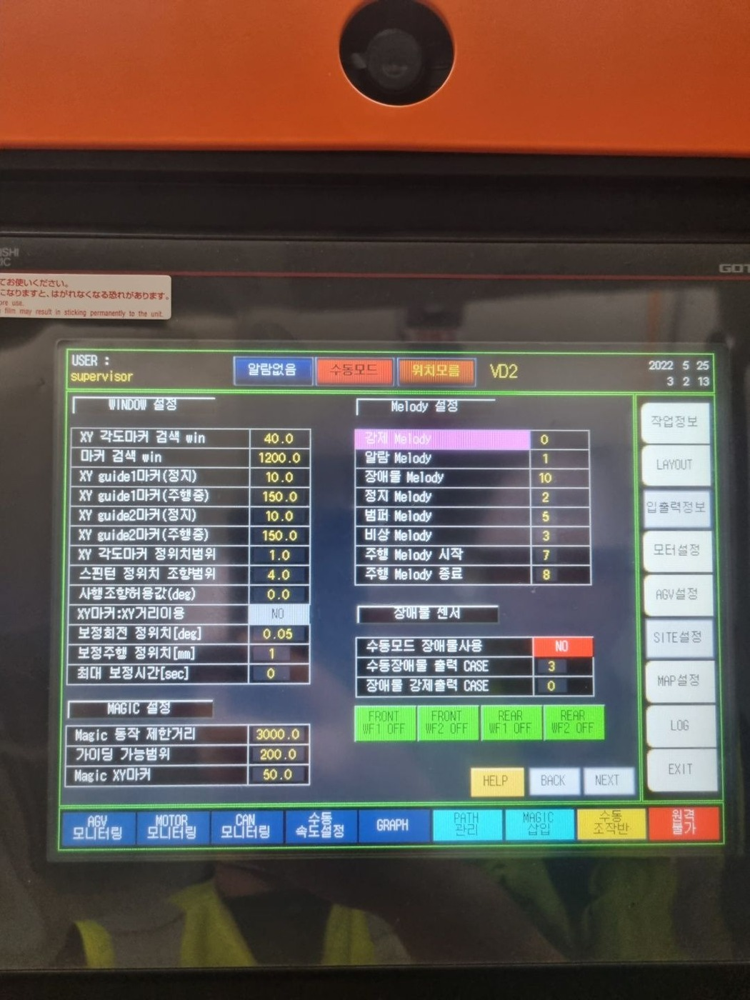
실차 VD2 온보드 HMI 현장 튜닝
GLS · QR 0.05° / 1mm 보정
• 20~40mm 협소 반입구 안착 편차 1mm 정밀 보정
• WF 장애물 센서·PIO 인터락·배선 실시간 진단
• WF 장애물 센서·PIO 인터락·배선 실시간 진단
11
WORK EXPERIENCE · AMR 제어팀 (인턴)
Field Case W-1 · 50m 반복 구간 위치 이탈 규명 & 세이프티·도킹 트러블슈팅 (2/2)
W-1. LiDAR-LOC 스캔 매칭 분석 기반 비대칭 반사판 배치로 50m 반복 구간 위치 이탈 재발 0건 정상화
Before / After 평면 비교도 : 50m 대칭 복도 vs 반사판 비대칭 랜드마크 배치
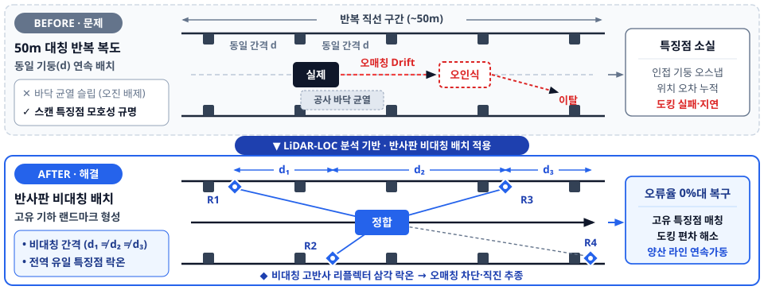
실무 엔지니어링 툴 진단 & 파라미터 보정
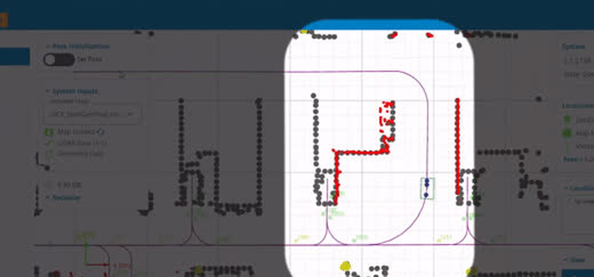
▲ LiDAR-LOC 스캔 포인트·맵 정합 분석
(반복 구간 특징점 이탈 지점 추적)
(반복 구간 특징점 이탈 지점 추적)
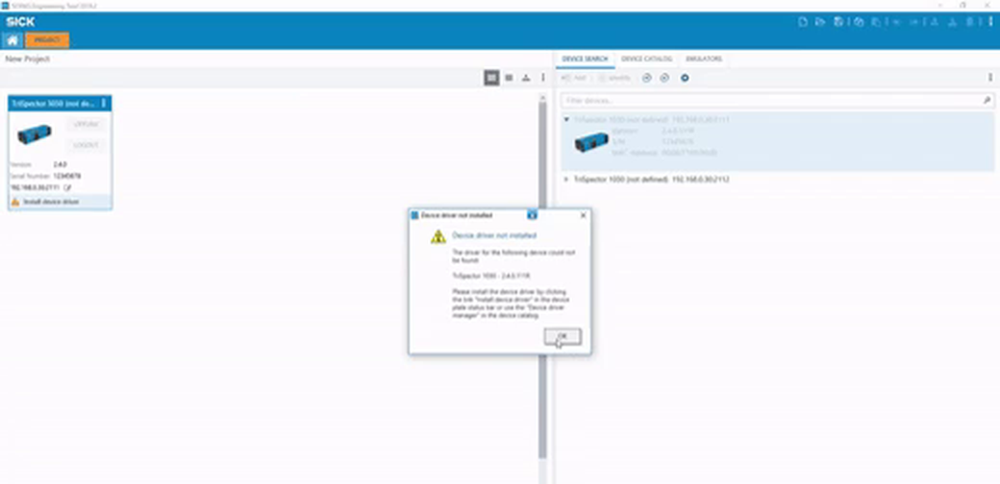
▲ SICK SOPAS ET 연동 · 디바이스 진단
(드라이버 · nanoScan3 파라미터 통합 관리)
(드라이버 · nanoScan3 파라미터 통합 관리)
1. 문제 원인
- 바닥 균열 슬립 가설 배제 → 특징점 모호성 규명: 약 50m 직선 라인의 공사 바닥 균열이 아닌, 동일 기둥·설비 패턴 반복에 따른 LiDAR-LOC 위치 이탈 확인
- 세이프티 오감지 & 간헐 Fault: 곡선·소화전 앞 인접 설비 간섭 및
nanoScan3간헐적n1/n3 fault로 비상 정지 발생 - 협소 스토퍼·PIO 타이밍 이슈:
20~40mm협소 반입구 간격과 설비 PIO/화물감지 인터락 예외로 도킹·반출입 지연 유발
2. 해결 과정 (핵심 실행)
- 비대칭 반사판 배치(d₁ ≠ d₂ ≠ d₃): LiDAR-LOC 실시간 스캔·맵 정합률 분석 후 고반사 리플렉터를 비대칭 설치해 구간별 고유 기하 랜드마크 형성
- 구역별 방호 필드 분할 & 20ms 보정:
Safety Designer·SOPAS ET로 주행·턴·소화전 전용 필드를 세분화하고 Input Delay20ms적용 - 1mm 티칭 & PLC/PIO 연동:
GLS·QR Offset(0.05°)10회 반복 보정과GX Works3PIO 시퀀스·배선(N24/S109) 디버깅 수행
3. 결과 및 검증
- 50m 반복 구간 위치 이탈을 재발 0건으로 해소하고 20~40mm 협소 반입 도킹 정밀도를 회복해 라인 연속 가동 달성
- 오정지 해소를 통해 미국 SK배터리(39대)·현대모비스 대구(40대)·한화큐셀 양산 라인 가동 셋업 완수
- 실제 산업 현장 센서·PLC/PIO·ACS 통합 관제 기반의 가설 검증형 필드 트러블슈팅 역량 확보
12
PROJECT 03 · AutoSavior
IoT 화재 감지 연계 자율주행 화재 진압 로봇 — 졸업작품 · 한이음 동상 (1/2 · 개요 및 아키텍처)
개발 기간
2024.04 ~ 2024.11 (8개월) · 학사학위논문 연계
수상 실적
스마트해상물류 × ICT멘토링(한이음 드림업) 동상 (한국정보산업연합회, 2024.12)
참여 인원
3인 팀 (본인: AI 화염 데이터셋·YOLOv8n 학습·Hailo-8 엣지 파이프라인·프로젝트 총괄)
기술 스택
ROS 2 Humble, Docker(Ubuntu 22.04), YOLOv8n, Hailo-8 NPU, Cartographer SLAM, OpenCR 1.0, LDS-02
프로젝트 개요 및 본인 핵심 기여
- 화재 관제 연계 자율 진압: CCTV 화재 감지 좌표 수신 후
Cartographer SLAM·NavigateToPose로 이동·진압하는 시스템 - 데이터 증강 · YOLOv8n 학습 전담:
Roboflow원본 800장→1,600장 증강 학습으로 mAP@50 0.926 · Recall 0.927 달성 - Hailo-8 NPU 엣지 경량화:
best.pt(6.3MB) → ONNX → Hailo Model Zoo양자화·컴파일을 거쳐 RPi5 + M.2 HAT+ 배포 - ROS 2 통합 · 프로젝트 총괄: 바운딩박스 중앙 정렬 소화 루프 연동, 8개월 산학 멘토링·학사학위논문(29p) 발간 총괄
데이터셋 증강
800 → 1,600장
Roboflow 2배 증강 구축
YOLOv8n 검출 정밀도
mAP@50 0.926
Recall 0.927 · 3.8ms 추론
엣지 가속 · 학술 성과
Hailo-8 NPU
한이음 동상 · 학사논문 29p
IoT 관제 – ROS 2 자율주행 – Hailo-8 온보드 소화 통합 파이프라인
실물 로봇 하드웨어(216×320×150mm) & 실내 A/B 구역 테스트 실증
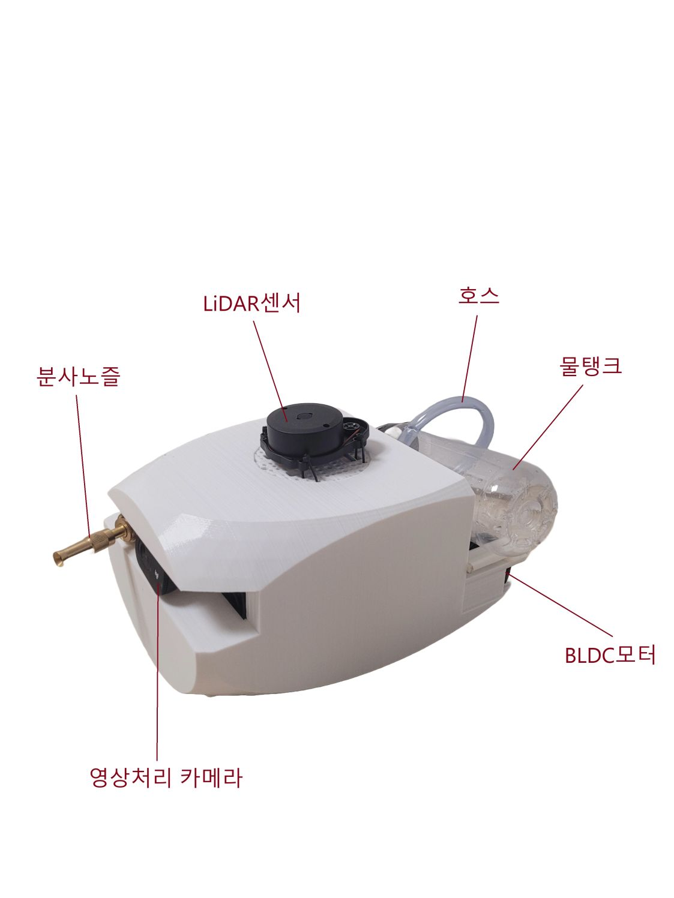
▲ 실물(216×320×150mm): 상단 LDS-02 · 전면 카메라·노즐 · 내부 2L 탱크
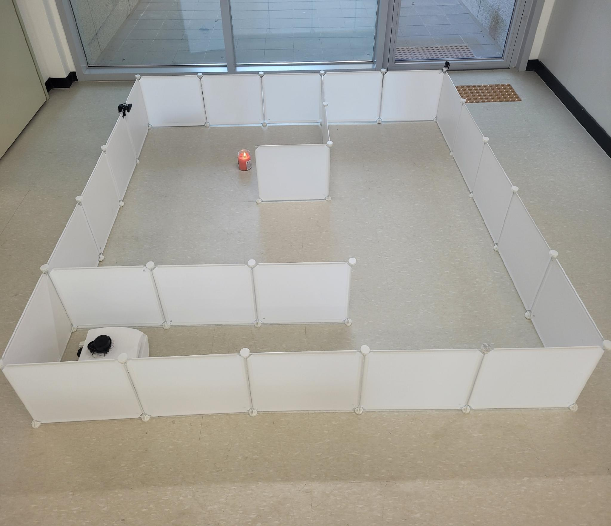
▲ 실내 테스트베드 (좌하단 대기 로봇 · 상단 CCTV · 화원 표적)
13
PROJECT 03 · AutoSavior
Problem Solving 3-1 · 화재·연기 YOLOv8n 학습 검증 & Hailo-8 엣지 NPU 경량화 (2/2)
3-1. Roboflow 2배 데이터 증강(1,600장) 및 YOLOv8n → Hailo-8 양자화 파이프라인으로 mAP@50 0.926 달성
데이터셋 증강 → YOLOv8n 학습 → Hailo-8 엣지 NPU 변환 파이프라인
| 검증 대상 (Val 190장 / 328 Instances) | Box Precision (P) | Recall (R) | mAP@50 | mAP@50-95 | GPU 추론 속도 (RTX 3060) |
|---|---|---|---|---|---|
| YOLOv8n (best.pt · 6.3 MB) | 0.905 (90.5%) | 0.927 (92.7%) | 0.926 (92.6%) | 0.607 (60.7%) | 총 3.8 ms (전처리 0.3 + 추론 2.1 + 후처리 1.4) |
Ultralytics YOLOv8.2.91 실측 검증 로그 & mAP50 학습 곡선
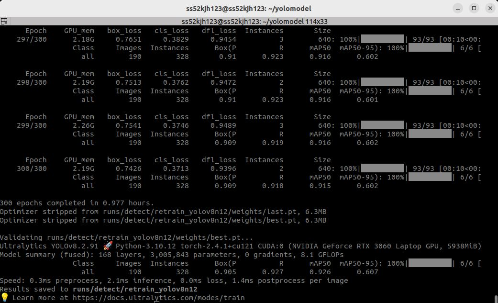
▲ 300 Epochs 학습·검증 실측 로그
(P=0.905, R=0.927, mAP50=0.926)
(P=0.905, R=0.927, mAP50=0.926)
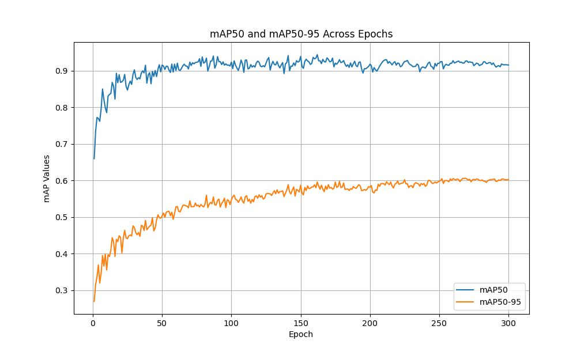
▲ Epoch별 mAP@50 수렴 추이 곡선
(안정적 수렴 및 과적합 방지)
(안정적 수렴 및 과적합 방지)
1. 문제 원인
- 초기 소형 화염·연기 탐지 한계: 800장 원본만으로는 화재 초기 작은 불꽃과 조도·각도 변화에 대한 일반화 성능 부족
- 온보드 CPU 추론 병목: SLAM·Nav2·하드웨어 제어 노드가 동시에 도는 Raspberry Pi 환경에서 CPU 단독 YOLO 추론 부하 과다
- 비화재 오탐 과제 도출: 붉은 천·강한 햇빛 등 비화재 적색 객체에 의한 간헐적 오인식 개선 필요성 확인 (논문 한계 분석)
2. 해결 과정 (핵심 실행)
- 데이터 증강 & 경량 모델 선정:
Roboflow회전·크기·밝기 2배 증강으로 1,600장을 구축하고 8.1 GFLOPs 초경량YOLOv8n300 epochs 학습 - ONNX → Hailo-8 NPU 오프로딩:
best.pt(6.3MB)를 ONNX로 변환 후 Hailo Model Zoo(파싱·양자화·컴파일)로 전용 NPU 가속 파이프라인 설계 - 실내 A/B 테스트베드 검증: A/B 구역 CCTV와
Cartographer SLAM주행·노즐 중앙 정렬 소화 시나리오 연동 검증
3. 결과 및 검증
- 검증셋(190장/328 instances) 기준 mAP@50 0.926 · Recall 0.927 · Precision 0.905 및 이미지당
3.8ms추론 성능 확보 - 인천대학교 정보통신공학 학사학위논문(29p) 발간 및 한이음 드림업 공모전 동상 수상(2024.12.04)
- 본 프로젝트에서 체감한 비전 오탐 문제를 이후
LIBO의 슬라이딩 필터+기하 임계값 설계로 발전시키는 밑거름 확보
14
THANK YOU FOR REVIEWING
감사합니다.
로봇 S/W · 자율주행(ROS 2) 엔지니어 김민수
현장의 물리 변수를 코드와 수치로 풀어내며, 실물 검증까지 책임지는 엔지니어로 기여하겠습니다.
김민수 (Kim Minsu) · 1999.05.19
ajferhcz153@gmail.com · 010-9900-9256 · github.com/kimminsu0519 · kimminsu0519.github.io/pf
15